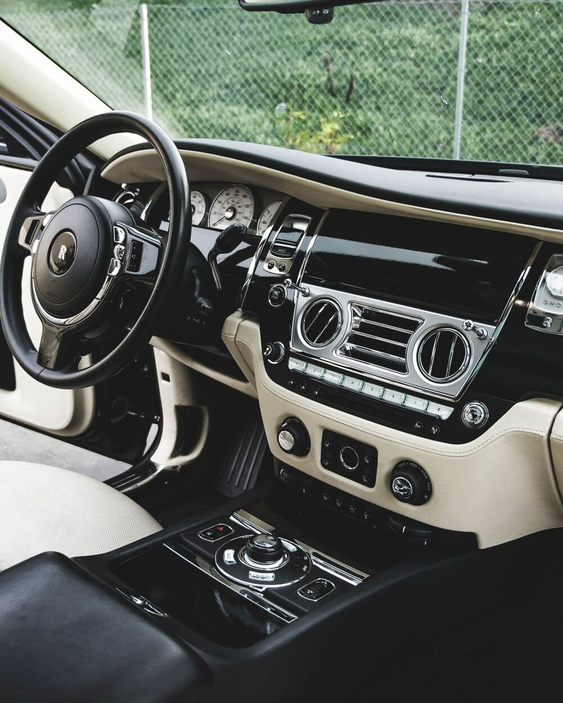
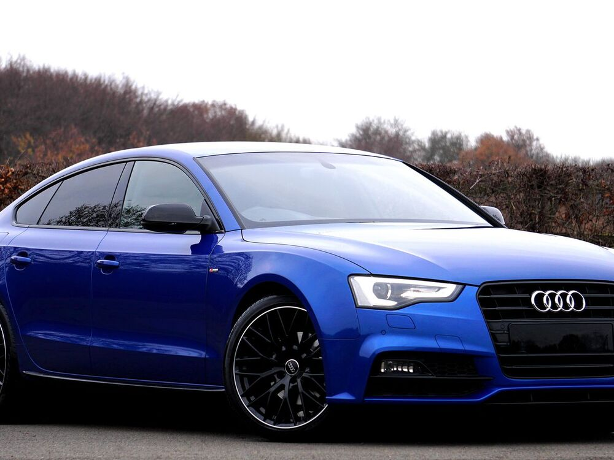
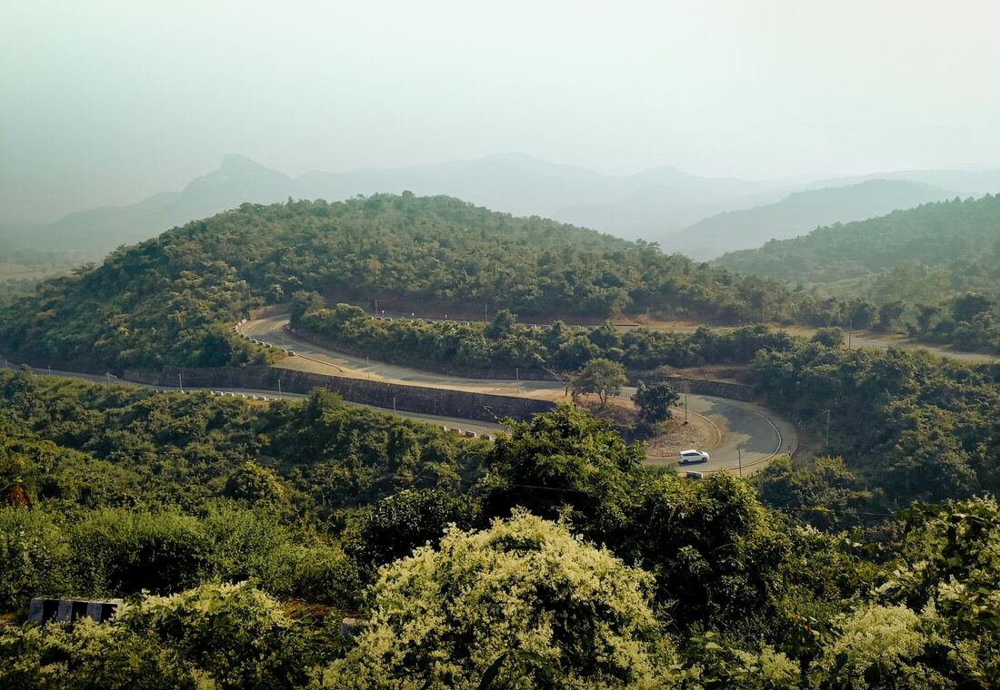
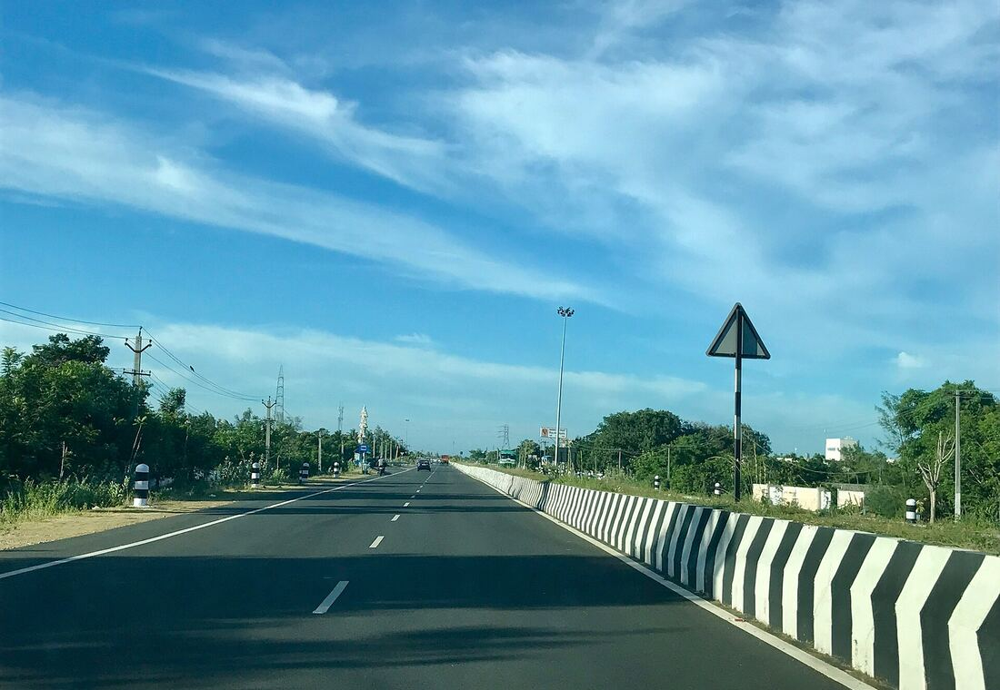
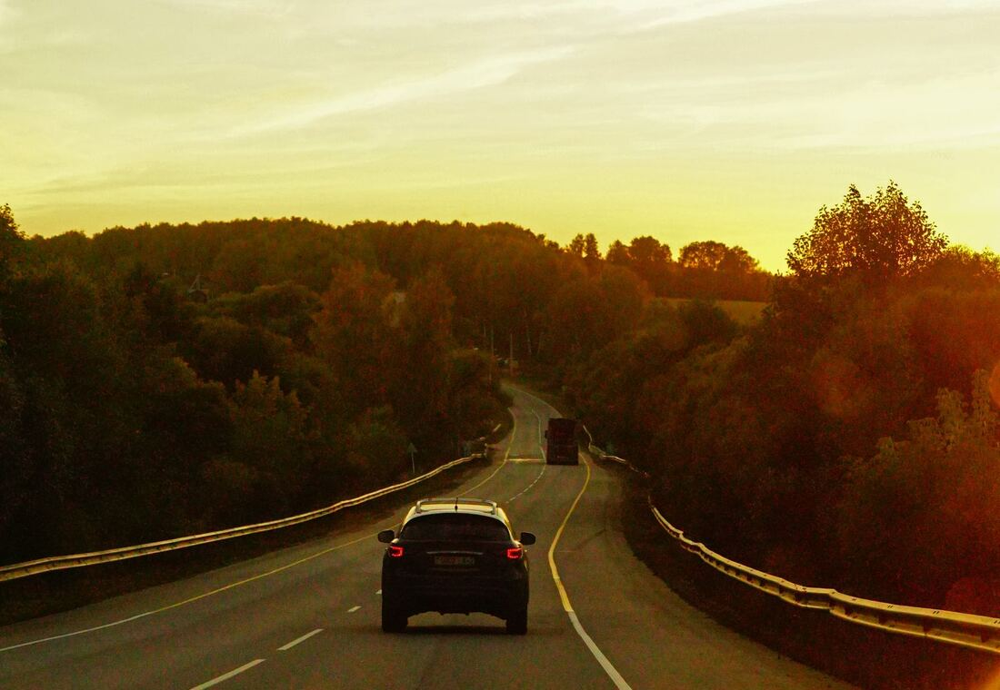
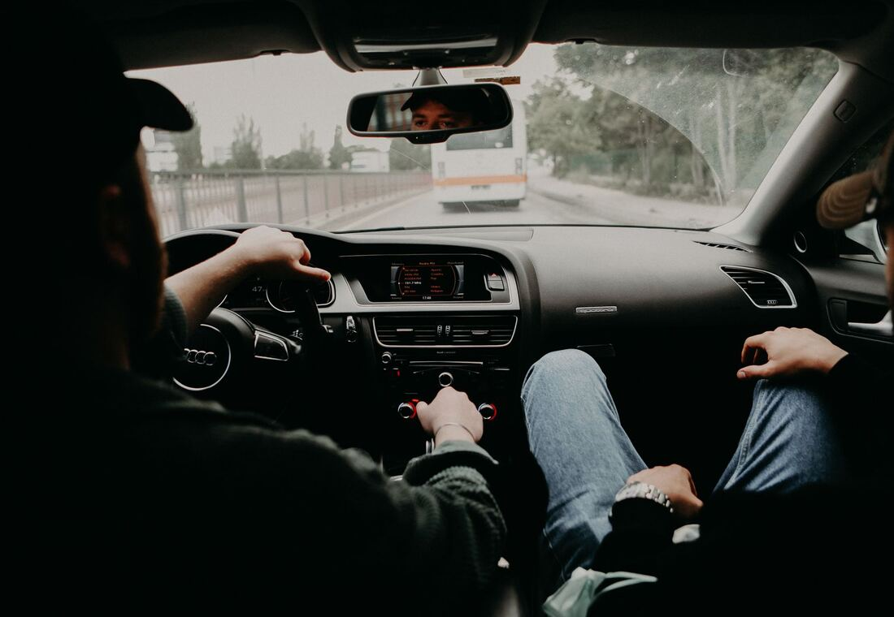

01
One Way Drop Taxi
Pay for a single direction. Ideal for planned drops to Chennai, Bengaluru, Tirupati and other cities where a return leg is not needed.
Learn moreVellore · Tamil Nadu
One-way drops, outstation journeys and airport runs planned around your schedule. Share your route, review a clear fare and travel with the details agreed before you leave.
Share the essentials and the team will reply with availability and a clear fare.


Vellore · Tamil Nadu · Est. for the road ahead
Who we are
Vellore One Way Cabs began with a simple observation: most cab bookings fail at the conversation, not on the road. Fares arrive late, details get lost between messages, and travellers are left guessing what is included.
We work the other way around. Your route is discussed first, the vehicle category is agreed second, and the fare is written down before the journey is confirmed. Everything starts from Vellore — the fort town at the centre of the Chennai–Bengaluru corridor — which makes one way drops, airport transfers and weekend journeys across Tamil Nadu a natural part of the work we do.
Services
Each service is planned around a different kind of journey. Choose the one closest to your plan and share the details — the team will confirm the vehicle and fare for your route.
Pay for a single direction. Ideal for planned drops to Chennai, Bengaluru, Tirupati and other cities where a return leg is not needed.
Learn more
Out and back with the vehicle reserved for your itinerary, including same-day returns and multi-day journeys with planned halts.
Learn more
Hourly and point-to-point rides inside Vellore for errands, hospital visits, meetings and everything a normal day asks of you.
Learn more
Longer journeys across Tamil Nadu with a route plan shared in advance, so you know the distance, timing and fare basis.
Learn moreCoordinated pickups and drops for Chennai, Tirupati, Bengaluru and Salem airports with flight details built into the plan.
Learn more
Roomier vehicles for families and small groups, with luggage considered and rest stops built into longer journeys.
Learn moreWhy travel with us
No inflated promises — just the parts of a cab journey that actually matter: clear information, the right vehicle and a plan you can rely on.
Send one enquiry with your route, date and vehicle preference. The details are formatted for the team so you do not have to repeat yourself across calls.
Choose between sedan, SUV and premium or larger vehicles so the cabin and luggage space match the people travelling.
One way drops, same-day returns and multi-day itineraries can all be discussed, along with the stops you want to make.
The quote explains the distance, vehicle category and inclusions, so you know what the figure covers before you commit.
Small groups travel light in a sedan, families spread out in an SUV, and larger parties can enquire about premium vehicles.
Route questions, timing concerns and change requests are handled by people who know Tamil Nadu roads, not an automated queue.
The vehicles
Vehicle categories are shown so you can choose with confidence. Exact models, seating capacity and luggage space are confirmed when availability is checked for your date.
 Category 01
Category 01
Everyday travel for smaller groups, city runs and one way drops where luggage stays light. Swift Dzire, Toyota Etios.
 Category 02
Category 02
Additional room for family travel, longer outstation journeys and heavier luggage. Toyota Innova, Maruti Ertiga.
 Category 03
Category 03
Enquiry-based options for larger groups or travellers who want more cabin space and presence. Toyota Innova Crysta.
Coverage
Vellore sits on the road to almost everywhere in the state. These are the districts travellers ask about most often — from the coast at Chengalpattu and Kanniyakumari to the hill country of The Nilgiris.
Hill routes · Coastal roads · Highway journeys
Popular routes
Select a destination to pre-fill the booking form, then add your date and preferred vehicle. Timings and fares are confirmed for your specific travel day.
The classic one way drop — the state capital, the airport and the coast, all on a single well-travelled highway.
A long highway run across the state border, planned with permit requirements and rest stops in mind.
A popular pilgrimage route, often booked as a same-day return or an early-morning one way drop.
A full-day journey west, best planned with the vehicle reserved for the full itinerary.
Temple country in the south — usually a one way drop or a multi-day round trip between cities.
A comfortable stop on the western highway, frequently requested for family and business travel.
One of the closest major temple towns, well suited to early morning departures and same-day returns.
A short heritage run that pairs neatly with a Chennai drop or an afternoon return journey.
How booking works
Send your pickup point, destination, date and passenger count through the booking form or WhatsApp enquiry.
Choose a sedan, SUV or premium category. The team checks availability for your route and travel date.
Review the quote, including tolls, parking and any applicable allowances, then approve the journey in writing.
Receive the confirmed pickup details, keep the confirmation handy and travel with the plan you agreed.
Our Standards
Every booking is delivered with clear commitments to punctuality, vehicle hygiene and transparent billing.
On-time doorstep pickup across Vellore, Katpadi, VIT and surrounding districts with prompt driver arrival before scheduled departure.
Clean, air-conditioned sedans and spacious SUVs inspected before every outstation journey for maximum travel comfort and safety.
No unexpected hidden surcharges. Clear distance-based rates with highway tolls and permits billed with total billing clarity.
Courteous, verified highway drivers with calm driving manners and comprehensive route familiarity across Tamil Nadu & Bengaluru.
Direct communication for late-night airport transfers, emergency hospital journeys, or last-minute flight schedule changes.
Questions
Start with the booking enquiry form on this page. Share your pickup point, destination, journey type, date, pickup time, number of passengers, the vehicle category you prefer and a contact number. When you press the WhatsApp enquiry button, the details are formatted into a single message that you can send to the business. The enquiry is not a confirmed booking — the team reviews availability on your route and replies with a fare and confirmation. You can also reach out through the contact page if you would rather discuss the journey first.
Yes. One way drop taxi travel is the core of the service. You book a vehicle for a single direction — for example Vellore to Chennai, Vellore to Bengaluru or Vellore to Tirupati — instead of paying for a return leg you do not need. One-way pricing normally depends on the distance, the vehicle category and any minimum kilometre condition applied to that route, so the fare is confirmed for your specific journey rather than published as a fixed rate.
Outstation journeys can be requested to destinations across Tamil Nadu, and to neighbouring states where permits allow. The district list on this page shows the destinations you can enquire about; it is not a guarantee that every route is operated daily. Longer journeys, hill routes and interstate trips may require additional permits, driver allowance or minimum running conditions. Sharing your travel dates early gives the team the best chance of arranging a suitable vehicle.
Airport transfers can be requested for departures and arrivals, most commonly for Chennai International Airport, Tirupati Airport, Kempegowda International Airport in Bengaluru and Salem Airport. Because flight timings and terminal pickups need coordination, share your flight number, terminal and preferred pickup time in the enquiry. Pickup points, waiting conditions and any parking charges are confirmed along with the fare before the journey is finalised.
Fares are built from the distance travelled, the vehicle category, the journey type (one way, round trip, local or airport transfer), the driver allowance, tolls, parking fees, state permit charges where applicable, and any minimum kilometre or minimum daily running condition for that route. The tariff page explains each component. Published amounts on this site are placeholders until the business supplies its rate card, and the final quote for your journey is always shared in writing before you confirm.
Yes. You can state a preference for a sedan, an SUV or a premium / larger vehicle in the booking form. Vehicle categories are offered subject to availability for your date and route. Sedans generally suit smaller groups and lighter luggage, SUVs suit families and extra bags, and premium or larger vehicles are arranged on request. Exact models and seating capacity are confirmed at the time of booking.
Yes. Round trips can be planned for same-day returns or multi-day itineraries. Share your outbound date, return date, the places you plan to visit and whether you need the vehicle to stay with you between stops. Round-trip fares usually combine running kilometres with a driver allowance and, for overnight trips, an applicable night halt charge. All of this is explained in the quote so there are no surprises later.
A booking is confirmed only when the team has checked vehicle availability, shared the fare and received your acceptance — followed by a written confirmation of the driver and vehicle details. An enquiry message, an auto-generated response or a form submission does not confirm a journey on its own. Please keep the written confirmation handy and check the pickup details a day before travel.
Tolls, parking fees and state permit charges are not automatically included unless the quote explicitly says they are. On most outstation and airport journeys they are either estimated in the quote or billed as actuals. If you prefer a single all-inclusive figure for budgeting, ask for an all-inclusive quote at the time of enquiry and the team will confirm what is covered.
Yes, changes can usually be accommodated when they are shared before the journey begins. Inform the team as early as possible with the new pickup or drop address. A change in distance or route may change the fare, and a significantly different itinerary may need a fresh quote or a different vehicle. Changes requested after the vehicle has started are subject to driver and vehicle availability.
Ready when you are
Share your route and travel date. Let's start planning your next cab journey from Vellore.